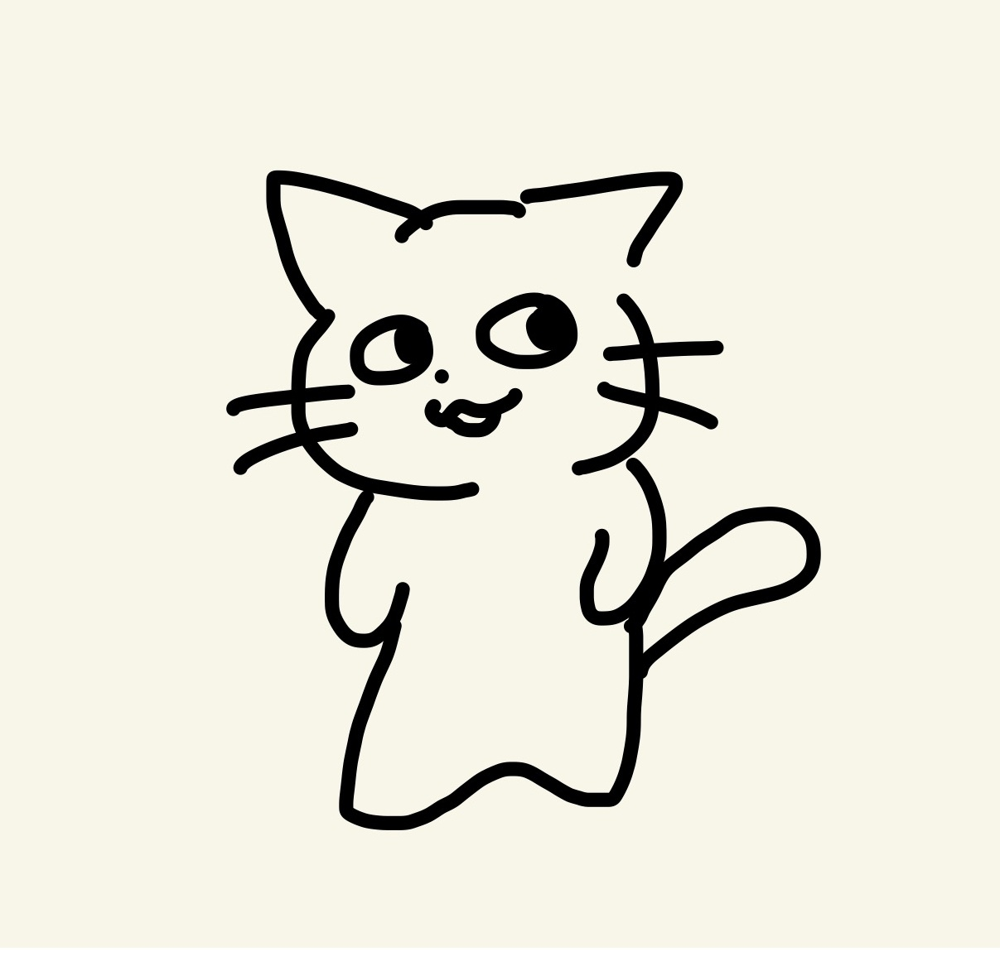

ちゃそ
こんちには！
HTML
CSS
Git
学習中
自己紹介
始めまして！最後は何も考えず文章を打ってるだけだったよーーー
スキル
- HTML / 打つだけ
- CSS / 打つだけ
- Git / 英語よくわからん
好きなこと
- ねる
- もっとねる
- ### ① 性格・考え方
- 自信がない
- 自己肯定感が低い
- 保守的
- 気分屋
- 人の目を気にしすぎる
- プレッシャーに弱い
- 焦るとパニックになりやすい
- 失敗を引きずる
- あとから後悔する
- 小さなミスを気にしすぎる
- できたことより、できなかったことに目が向く
- 自分の能力を低く評価してしまう
- 責任を取れるほどの実力がないと感じる
- 間違えることを恐れて慎重になりすぎる
- 初めてのことに不安を感じやすい
- 練習してから本番に挑みたい
### ② コミュニケーション・対人関係
- 間が悪い
- 話しかけるのをためらう
- 相手が忙しそうだと声をかけづらい
- 自信がないと声が小さくなる
- 話している途中で声が小さくなってしまう
- 大人数が苦手
- 目を合わせるのが苦手
- 自分の意見を言うのをためらう
- 自分から提案するのに勇気がいる
- あとから聞きたいことが出てくる
- 担当外のことにどこまで口を出していいか迷う
### ③ 話し方・説明
- 話を組み立てるのが苦手
- 結論より先に背景から話してしまう
- 話の蛇足が多い
- 説明が長くなりがち
- 話している途中で脱線する
- 話している途中で何を言おうとしていたか忘れる
- その場で簡潔に説明するのが苦手
- 複雑な話を短く要約するのが苦手
- どこまで詳しく説明すればいいか迷う
- 話しながら別のことを考えると、話の流れを見失う
### ④ 記憶・理解・集中
- メモを取らないとすぐに忘れる
- 長い説明を聞くと最初の内容を忘れる
- 複数の数字や日付を覚えるのが苦手
- 細かい条件や注意事項を忘れやすい
- 話を聞きながらメモを取るのが苦手
- 作業に集中すると周囲の話を聞き逃す
- 返答を考えていると相手の話が頭に入らなくなる
- 複数のことを同時に考えると頭がまとまらない
- マルチタスクが苦手
- 作業の途中で別のことに切り替えるのが苦手
- 作業を中断すると集中を取り戻すのに時間がかかる
- 長い説明の前後関係を頭の中だけで整理するのが苦手
### ⑤ 行動・仕事の進め方
- 行動し始めるまでが遅い
- 作業を始める前に考えすぎる
- 道筋を立てるのが苦手
- 決まったこと以外の対応が苦手（マニュアルが好き）
- 目的や完成形が分からないと動きづらい
- 担当範囲が曖昧だと自分から動きづらい
- 初めての作業にかかる時間を見積もるのが苦手
- 予備時間をどれくらい確保すべきか迷う
- 自分の仕事に集中すると周囲の進捗まで気が回らない
- 他のメンバーの業務の流れを把握しきれていない
- 後続作業を予測するのが苦手
### ⑥ 判断・決断
- 自分の判断に自信が持てない
- 選択肢を比較しすぎて決断が遅くなる
- 判断に必要な根拠が十分か分からなくなる
- 判断する前に過去の事例を確認したくなる
- どこまで自分で判断していいか迷う
- 作業の完成基準を自分で決めるのが苦手
- どこまで確認すれば十分なのか迷う
- 確認すべき箇所の優先順位を決めるのが苦手
- プロジェクト全体の優先順位を判断するのが苦手
### ⑦ 調査・文章作成
- 調べるのに時間がかかる
- 必要な情報を探し出すのが遅い
- 過去の経緯を必要以上に調べてしまう
- 調べるのをどこで終えるか判断できない
- テンプレートを自分の状況に当てはめるのに時間がかかる
- 文章の書き方を考えるのに時間がかかる
- 過去の文章を参考にしないと書き方に迷う
- 文章に必要以上の情報を盛り込んでしまう
- 文章の表現が気になって何度も修正してしまう
- 自分の理解が正しいか何度も資料を見直してしまう
- 細かいところまで確認しすぎる